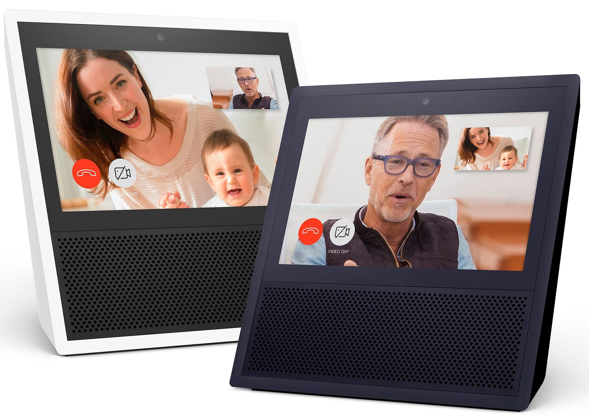

Why TVbots Are The Next Big Thing
Written in response to this ^^^ article.

Hi Dharmesh!
Eventually, I agree with you, especially when you close your article saying:
“This kind of audio+visual interface is going to be really popular” — Dharmesh Shah
Yes, for quite some time, I called (with a quasi-provocation) the TVbot this “new” kind of audio+visual interface (see my tweets). And by the way, these kind of devices will become soon mainstream, because the chatbot-inside integration:
TVBots = chatbots for voice-first interactive “television.”
TVbots for TVhubs?
TVbots are chatbots for next generation of interactive “television” (let’s call TVhub): a computer connected on internet, sort of smart-home hub enabled by a vocal interface (INPUT) along with a screen/monitor for human-machine graphical info interaction (OUTPUT), and last but not least an IoT central hub to control connected home devices (sensors/actuators).
I hazard that TVhubs will also substitute home-phones, and is not by chance that Amazon is launching Alexa Calling (voice over IP service through the Amazon Show device).
Conversational computing (chatbot) still matter (with TVbot)?
Short answer: absolutely yes!
I’m a CHATbot developer, and I’m specifically enthusiast on natural language-understanding conversational computing realms, but please note this do not contradict the TVbot way: I feel that next generation of chatbots applications will be highly conversational and chatbot intelligent applications will really matters (BTW, of course let’s do not more claim any “artificial intelligence”), instead of the the hardware interface device (Amazon Show or similar incoming competitors TVhubs).
14 May Update:
I better defined TVbots & TVhubs. See also:
https://medium.com/@solyarisoftware/premise-recap-in-terms-of-hardware-i-see-the-amazon-show-as-a-proof-of-concept-of-a-next-1b641a897b17
What do you think about it?
Originally published on Medium.